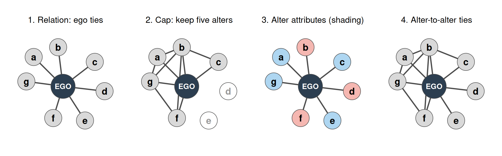
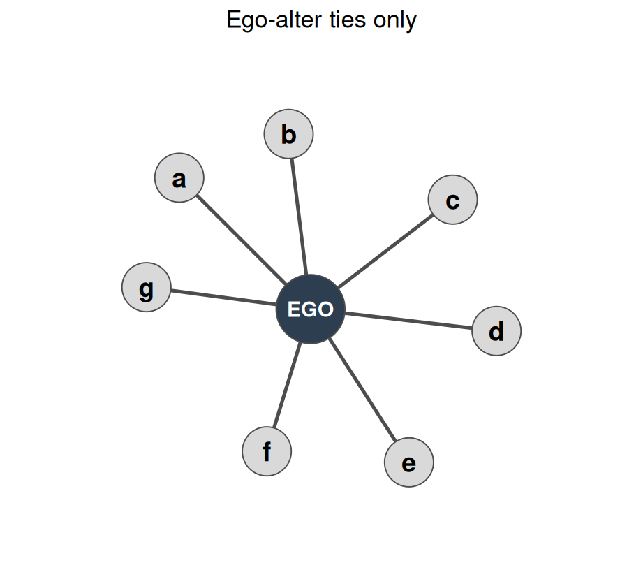
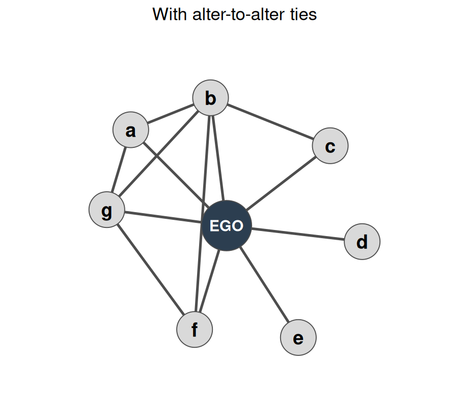
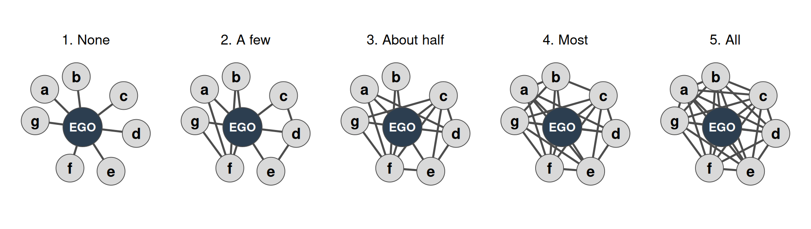
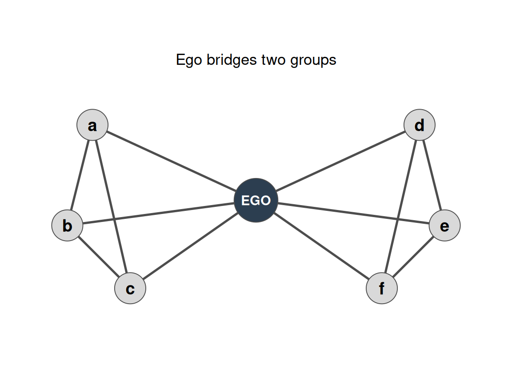

| Source | What the researcher does | Typical settings | Main limitation |
|---|---|---|---|
| Surveys | Asks people about their relations | Any population you can reach | Depends on what respondents recall and report |
| Direct observation | Goes to a site and records interactions | Classrooms, neighborhoods, karate club, monastery, fraternity house | Costly, bounded to one site, and misses ties elsewhere |
| Big data | Uses digital traces of communication and interaction | Phone logs, email, online platforms | Captures only what leaves a digital trace; meaning of ties is often unclear |
Collecting Ego-Network Data
Surveys, Name Generators, Name Interpreters, and Alternative Measures
Where Does Network Data Come From?
For ego networks, surveys are the optimal method. Sometimes the most effective way to figure out who a person is connected to is simply to ask them.
Ego Networks: Asking People Directly
An ego network records what ego reports about:
- Ego: socio-demographic and other characteristics
- Role, exchange, and interaction relations between ego and each alter
- Relations among the alters, as ego perceives them
- Properties of each relation, from ego’s point of view

Types of Ties in Ego Networks
| Tie type | Examples | Example survey item |
|---|---|---|
| Role relations | Friends, kin, business partners | Who are your friends? |
| Sentiments and cognitions | Liking, trusting, acquaintanceship | Whom do you trust most? |
| Behavioral interactions | Calling, texting, citing, supporting, resource exchange | With whom did you talk in the last week? |
The same alter can be connected to ego through several tie types at once, so the researcher’s choice of tie type determines which network gets measured.
Measuring Ego Networks: Four Steps
- Pick the relation of interest. This defines your name generator.
- Set a maximum number of alters, typically 5 to 20.
- Pick the alter and tie-level characteristics you care about. This defines your name interpreter.
- Optionally, collect information on alter-to-alter relations.
What Each Step Changes

Panel 2 shows hollow alters that fell outside the cap of five; the cap sets the size of the network that the rest of the survey describes. Shading in panel 3 is one attribute, such as the category of the alter.
Name Generators: Four Approaches
| Approach | Example prompt | Main limitation | Main strength |
|---|---|---|---|
| Role-relation | List up to [X] friends, co-workers, co-authors, roommates, etc. | Low reliability; "friend" means different things to different people | Easy to ask |
| Interaction | List up to [X] people you most frequently interact with. | Frequency is not the same as importance or closeness | Fewer validity problems than role-relation; neutral criterion |
| Affective | List up to [X] people you feel closest to or trust most. | Same reliability issues as role-relation; elicits smaller networks | Captures strong, subjectively significant ties |
| Exchange | List up to [X] people you would go to for advice, financial support, etc. | Not appropriate for every purpose | Fewer reliability problems; captures weak ties and more alters; fits social capital studies |
Different approaches can produce ego networks with different structural characteristics.
Famous Name Generators
| Study | Name generator |
|---|---|
| Wellman (1979), East York Study | "Name the six persons outside your home that you feel closest to." |
| Fischer (1982), Northern California Communities Study | "Name all persons who would provide any of eight types of aid." |
| Marsden (1987), General Social Survey | "Named all persons with whom you have discussed matters important to you." |
The GSS item elicits core discussion networks. It was first fielded in the 1985 GSS as a probability sample of ego networks, and McPherson and Smith-Lovin replicated it in 2004.
Fischer on Surveying Personal Networks
Fischer and McCallister argue that survey researchers can only measure a fraction of the people someone knows, so the fraction you choose shapes the network you end up describing.
Their critique of a single “best friend” probe is simple: a friendship question over-samples some ties and misses others, especially kin and distant but important contacts.
Their solution is a core network definition built around rewarding interactions — advice, worries, money, work, household help, and social activity — rather than one vague label like “friend.”
The lesson for network data collection is that the name generator is not neutral. It is part of the theory of what the network is.
Fischer’s Interview Battery
Fischer and McCallister’s survey battery asks respondents to name people who:
- would care for their home,
- help with household tasks,
- talk about work, hobbies, or worries,
- give advice for important decisions,
- lend a large sum of money,
- or share social activities.
They also let respondents name as many people as they wish for each item, then use follow-up questions to interpret what each named alter means.
That design is useful for showing students why a one-question generator is easy to ask but often too narrow to be informative.
“Survey researchers can only hope to learn about a fraction of that population. Which fraction will determine the descriptions of the networks that are ultimately obtained.”
“We wanted, for our own purposes, to tap the part of respondents’ networks that most influenced their attitudes, behavior, and well-being. We call this the ‘core’ network.”
Choosing a Name Generator
- Pick the most neutral criterion for eliciting names, such as interaction frequency.
- Then use name interpreters to recover roles, exchanges, sentiments, and so on.
- A neutral generator limits what the names say about roles. Interpreters restore that detail for each named alter.
A Data Collection Case: NetHealth
- Interaction-based name generator, up to 20 alters
- Eight survey waves
- Wave 3 began feeding back wave N-1 names after subjects listed people
- Phone number and email are collected to match alters across respondents
- Uses: alter counts for family, pre-ND, and post-ND friends; comparing tie-strength measures; comparing perceived and actual networks; change over time in ego-network traits
| egoid | alterid | wave |
|---|---|---|
| 101 | 2044 | 1 |
| 101 | 2047 | 1 |
| 101 | 2051 | 2 |
| 101 | 2060 | 2 |
| 102 | 2044 | 1 |
Long-format name generator file (illustrative rows, not NetHealth data).
Storing Ego-Network Data
Name-generator file (one row per ego-alter nomination)
| egoid | alterid | wave |
|---|---|---|
| 101 | 2044 | 1 |
| 101 | 2047 | 1 |
| 101 | 2051 | 1 |
| 102 | 2044 | 1 |
Alter-to-alter file (one row per perceived tie among alters)
| alterid1 | alterid2 | egoid | wave |
|---|---|---|---|
| 2044 | 2047 | 101 | 1 |
| 2044 | 2051 | 101 | 1 |
Illustrative rows. The alter-to-alter file holds only ties among ego’s own alters, not the full network.
Name Interpreters: What You Can Measure
| Category | Examples |
|---|---|
| Sociodemographic | Sex or gender, age, race, years of education, religion |
| Relational | Family, friend, co-worker, roommate; relationship to an organization; frequency of contact |
| Sentiment and affect | Closeness, trust, listing position, negative sentiments |
| Exchange and support | Financial help, comfort, advice, social support, topics discussed |
| Duration | How long ego has known the alter |
| Similarity | Shared tastes, attitudes, or activities (cultural matching) |
| Other traits | Health, happiness, activity, sleep (NetHealth) |
Subjective closeness is considered a reliable indicator of tie strength.
Sample Interpreter Questions
| Construct | Sample question | Response format |
|---|---|---|
| Sex of contacts | Please indicate the sex of each of your contacts. | Female / male, one per alter |
| Race and ethnicity | Check the categories that describe each contact. | Checkbox grid, one row per alter |
| Relationship | What is their relationship to you? | Parent, sibling, friend, acquaintance, neighbor, and so on |
| Closeness | Are you especially close, merely close, less than close, or distant? | Four-level scale |
| Support | Check the contacts who have provided each type of support. | Checkboxes: financial need, comfort, company, advice |
| Duration | How long have you known each person? | Whole years |
| Similarity | Overall, how similar are each of your contacts to you? | Ten-point scale |
Cultural Matching: Shared Activities
Ego lists up to five activities they enjoy. For each alter, the survey records whether that alter also enjoys each one. The matching count is the number of listed activities the alter shares.
| Alter | Hiking | Cycling | Soccer | Gym | Swimming | Matches |
|---|---|---|---|---|---|---|
| A1 | ✓ | ✓ | ✓ | 3 | ||
| A2 | ✓ | ✓ | 2 | |||
| A3 | ✓ | ✓ | 2 | |||
| A4 | ✓ | ✓ | ✓ | 3 |
Illustrative entries. The matching count is the measure of similarity that a study would then relate to tie persistence.
Ties Among Alters


Clustering in the ego network is a property of the alter-to-alter ties, which only the optional fourth step collects.
Alternatives: Position Generators
Position generators ask whether ego knows anyone in a list of occupations.
- High criterion and face validity; quick to administer
- Occupational labels are easy to understand
- Easily standardized with occupational census codes
- Suited to social capital and resource access
- Simple metrics: number of positions, prestige range, top rank
- Can be followed by a position interpreter for the tie to each position
| Job | Know anyone? | Years known | Relationship | Closeness |
|---|---|---|---|---|
| Lawyer | Yes | 3 | Relative | Very close |
| Mechanic | No | |||
| Teacher | Yes | 10 | Acquaintance | Close |
| Police officer | No |
Illustrative format after Lin (1999). Responses are invented.
Position Generator: Worked Example
| Occupation | Know anyone? | Years | Relationship | Closeness |
|---|---|---|---|---|
| Lawyer | Yes | 3 | Relative | Very close |
| Mechanic | No | |||
| Teacher | Yes | 10 | Acquaintance | Close |
| Police officer | No | |||
| Nurse | Yes | 6 | Friend | Very close |
| Accountant | Yes | 2 | Co-worker | Not close |
| Farmer | No | |||
| Engineer | Yes | 1 | Friend | Close |
- The eight occupations are the instrument; the same list is read to every respondent.
- Respondent A knows someone in five of the eight.
- Follow-up items are asked only for accessed positions, so blank rows carry no further data.
Computing Respondent A’s Metrics
| Metric | Calculation | Value |
|---|---|---|
| Positions accessed | 5 of 8 occupations | 5 (62.5%) |
| Relationship types | acquaintance, co-worker, friend, relative | 4 |
| Mean years known | (3 + 10 + 6 + 2 + 1) / 5 | 4.4 |
| Share close | 4 of 5 accessed positions are very close or close | 80% |
The access rate is the count divided by the list length, \(\frac{5}{8} = 0.625\). A prestige range would require linking each accessed occupation to an external prestige score, which this example does not include.
Comparing Two Respondents
| Metric | Respondent A | Respondent B |
|---|---|---|
| Positions accessed | 5 | 2 |
| Share of list | 62.5% | 25.0% |
| Relationship types | 4 | 1 |
| Mean years known | 4.4 | 17.5 |
| Share close | 80% | 100% |
- Respondent B reaches fewer occupations, but every accessed tie is kin and very close.
- Respondent A reaches more occupations through a wider mix of relations.
- The counts do not say which access is more useful; that depends on what each position can provide.
- The list length sets the scale, so compare rates within one instrument.
Alternatives: Resource Generators
| Do you know anyone who... | Yes | Access: acquaintance | Access: friend | Access: family | And yourself? |
|---|---|---|---|---|---|
| Can repair a car or bike | ✓ | ✓ | |||
| Owns a car | ✓ | ✓ | ✓ | ||
| Can play an instrument | |||||
| Is active in a political party | ✓ | ✓ |
Illustrative format after Van der Gaag and Snijders (2003).
- Combines the practicality of the position generator with the detail of the name generator
- Captures several dimensions of social support and connectivity
- Supports standardization of social capital measures across life domains
- Simple metrics: number, popularity, and range of resources accessed
- Links resources to role relations empirically
Resource Generator: Worked Example
| Resource | Know anyone? | Access through | And yourself? |
|---|---|---|---|
| Repair a car or bike | Yes | A1 (friend) | No |
| Own a car | Yes | A2 (family) | Yes |
| Play an instrument | No | No | |
| Active in a political party | Yes | A3 (acquaintance) | No |
| Help move house | Yes | A1 (friend), A4 (family) | No |
| Give financial advice | Yes | A4 (family) | No |
- Respondent C names contacts A1 to A4 and sorts each resource by who provides it.
- A2 provides the car, and C also owns one.
- Moving help comes through two contacts, A1 and A4.
Computing Respondent C’s Metrics
| Metric | Calculation | Value |
|---|---|---|
| Resources accessed | 5 of 6 resources through alters | 5 (83.3%) |
| Contacts used | distinct contacts named in access | 4 |
| Access events | one row per resource-contact pair | 6 |
| Relation types | distinct relation types among contacts | 3 |
| Share through family | 3 of 6 events are family | 50% |
| Events per contact | 6 events / 4 contacts | 1.5 |
The car appears in both calculations: it counts as an alter-provided resource, while ego’s own ownership is recorded separately in the “And yourself?” column.
Comparing Two Respondents: Breadth and Dependence
| Metric | Respondent C | Respondent D |
|---|---|---|
| Resources accessed | 5 (83.3%) | 3 (50.0%) |
| Contacts used | 4 | 1 |
| Relation types | 3 | 1 |
| Share through family | 50% | 100% |
| Events per contact | 1.5 | 3.0 |
- Respondent C spreads access across four contacts and three relation types, with no contact providing more than two resources.
- Respondent D reaches half the resources, all through one family member, so that access depends on a single tie.
- The metrics describe breadth and dependence. They do not show how useful each resource is.
- As with the position generator, the resource list is the instrument, so compare rates within one list.
Visual Network Scales: Open or Clustered
Respondents choose which picture best approximates how interconnected their close friends are. Each diagram is a stylized, redrawn example, not respondent data.

Panels differ only in how many of the 21 possible alter pairs are tied.
Visual Network Scales: Bridging

Respondents rate how many bridging positions they occupy among close friends.
| Rating | Meaning |
|---|---|
| 1 | I do not occupy any bridging positions |
| 2 | |
| 3 | |
| 4 | |
| 5 | I occupy many bridging positions |
Visual Network Scales: Perceived Position Change
Respondents rate how their position in the organization’s network has changed since last year.
| Rating | Meaning |
|---|---|
| 1 | I have moved more toward the periphery of the network |
| 2 | |
| 3 | My position in the network has remained about the same |
| 4 | |
| 5 | I have moved more toward the center of the network |
These scales measure perceptions. The respondent’s report of their position is the data, and it need not match the structure that a researcher would compute.
Summary of Alternative Approaches
| Approach | Elicits | Typical use |
|---|---|---|
| Name generator and interpreter | Named alters and their traits | Core ego networks; NetHealth |
| Position generator | Access to occupations | Social capital |
| Resource generator | Access to resources, and through whom | Social capital and support |
| Visual network scales | Perceived network position | Perceptions of openness and centrality |
| Cognitive social structures | Perceived ties among others (see chapter 29) | Perceived structure beyond direct ties |
Key Takeaways
- Surveys are the best approach for ego networks, and the four steps structure any survey.
- The name generator decides who gets named; the interpreters decide what you learn about them.
- Generators built on role labels, affect, interaction, and exchange produce different networks.
- Alter-to-alter ties are optional but are the only way to measure clustering within the ego network.
- Perceptual scales measure how the ego sees the network, which can differ from the network the researcher observes.
Social Capital in Ego Networks